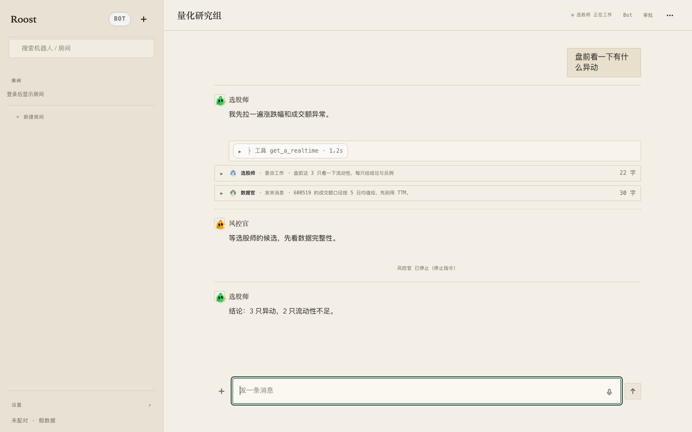

共享同一段对话
每个 Agent 都看到房间里的同一段上下文。用户不用把同一句话复制四遍，也不用在四个模型之间做搬运工。
RESEARCH ROOMS · MULTI-AGENT WORKSPACE
DSH、Claude Code、Codex、Grok Build 住进同一个云端 workspace。它们看同一段对话，接同一件事，像同事一样被 @、被审批、被复盘。
FIELD NOTE / 001
不是一个会回话的聊天框。是一组会互相接话、在同一份文件上工作、在危险动作前停下来的 Agent。
THE ROOM
一个房间 / 四条 Runtime 路径 / 同一个上下文

说一句，多个 Bot 各自接话；谁在说、说到哪一步、用了什么工具，都在同一页上。
WHY A ROOM
每个 Agent 都看到房间里的同一段上下文。用户不用把同一句话复制四遍，也不用在四个模型之间做搬运工。
Host、研究、风控、执行——房间有成员和轮次。该谁说话谁说话，不把多 Agent 变成同时刷屏。
不是 API 转述。每个 workspace 是一个真实的云端容器，Agent 在里面读文件、跑命令、留下产物。
RUNTIMES
所有 Agent 都在同一个 workspace 里；模型 key 按 Bot 注入，不进入代码仓库。
HOW IT WORKS
打开 Roost，账号登录。不用配对、不用在本机装任何东西。
从一个 master Bot 开始，选择成员、host 和谁回答；它就是你的云端工作台。
@ 一个 Bot，或者让 host 分配任务。它们共享文件、工具和上下文，轮次可见。
DEFAULT DENY
每个 workspace 跑在独立 Docker 容器里：非 root、cap-drop、bridge 网络、默认拒绝出网。危险动作要审批，凭据按 Bot 注入。
读安全设计QUESTIONS
不需要。当前是纯云端模式：登录后直接进入 room，本地 DSH 配对页已下线。CLI / desktop 可以在后续版本接回。
可以。模型 key 存在控制面，按 Bot 用 credentialRef 注入；Grok Build、Claude Code、Codex 都可以指到 OpenAI / Anthropic 兼容的 DeepSeek 端点。
可以。仓库提供控制面 systemd/launchd、Docker worker、镜像 Dockerfile、egress allowlist 和备份脚本；没有构建步骤。
默认拒绝出网，容器非 root、cap-drop ALL；工具调用走审批。设计文档里记录了当前边界和尚未完成的 gVisor/Kata 评估。
START A ROOM
登录，建房间，@ 第一位同事。
打开 Roost